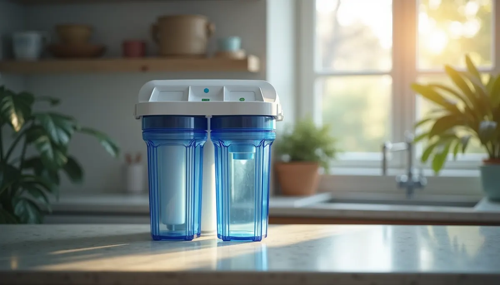

Are you frustrated with the taste and smell of your tap water? Do you worry about the hidden contaminants that could be lurking in your glass? It’s time to take charge of your home's water quality. At Angle Stop Plumbing, we believe that every family deserves clean, safe, and great-tasting water. We are your top source for whole-home water filtration, including advanced reverse osmosis (RO) systems.
What is Reverse Osmosis?
Reverse osmosis is a popular and effective water purification technique that uses pressure to push water molecules through a very fine semi-permeable membrane. This membrane blocks most dissolved solids, chemicals, and impurities, allowing only pure water to pass through.
Imagine this process as a strict bouncer for your water, filtering out anything undesirable. Typically, this multi-step system includes pre-filters that remove larger particles and chlorine, which protects the sensitive RO membrane and ensures a long-lasting, efficient water purification system.

Why Choose Reverse Osmosis for Your Home?
Investing in an RO system provides multiple benefits for your health, your home, and your finances:
Superior Contaminant Removal
RO systems excel at removing a broad range of contaminants that standard filters often miss. For instance, studies show that reverse osmosis can eliminate up to 99% of lead, fluoride, arsenic, nitrates, and even pesticide residues. With a well-maintained RO system, many families can significantly improve their health by reducing exposure to harmful substances commonly found in tap water.
This peace of mind is especially valuable for households with children or individuals who may have weakened immune systems, ensuring access to water that’s not just safe, but also healthy.
Better Taste and Odor
By removing minerals and chemicals that can give tap water an unpleasant taste, RO systems provide you with crisp, clean water ideal for drinking, cooking, and making your favorite beverages. Imagine savoring a cup of coffee brewed with water that tastes as delightful as the aroma suggests! Many users report that their enjoyment of everyday beverages significantly increases when they switch to RO water.
Saves You Money
Ditch the expensive bottled water habit. An RO system delivers an endless supply of purified water straight from your tap, resulting in significant savings over time. For instance, if you currently spend about $50 a month on bottled water, that’s $600 a year! Instead of pouring money into single-use plastic, you could redirect those funds toward fun family activities or savings.
Extends Appliance Lifespan
When it comes to maintaining your home appliances, using purified water is key. Hard water and contaminants can cause buildup and lead to expensive repairs or premature replacements. With an RO system in place, your coffee maker, dishwasher, and other appliances can operate more efficiently and enjoy a longer lifespan. For example, RO water can reduce scale buildup in appliances by approximately 80%.
How Does Reverse Osmosis Work?
The reverse osmosis process consists of several stages that work in tandem to ensure you receive the highest quality water:
- Pre-Filtration: Water flows through pre-filters that eliminate larger particles, sediment, and chlorine. This step is essential for safeguarding the RO membrane.
- RO Membrane: The water is then forced through the semi-permeable RO membrane, where the majority of dissolved solids and contaminants are filtered out.
- Post-Filtration: After passing through the RO membrane, the water goes through a final post-filter that ensures any lingering tastes or odors are completely removed.
- Storage Tank: The cleaned water is stored in a tank, ready for you to use at your convenience.
- Final Dispensing: When you turn on your tap, the purified water flows out, providing refreshing, clean water at your fingertips.
Maintenance and Care
One of the best features of an RO system is its minimal maintenance requirements. Regularly changing the pre-filters and post-filters is crucial for optimal operation. Many systems come with a filter change indicator, making it straightforward to know when replacements are needed.
To keep your system running smoothly, consider scheduling a professional service every couple of years. This will ensure everything functions correctly and help you avoid potential issues down the road.
Final Thoughts
Investing in a reverse osmosis system from Angle Stop Plumbing is a smart decision for anyone eager to enhance their water quality at home. With exceptional contaminant removal, improved taste, financial savings, and better appliance longevity, the benefits are clear.
Don't compromise when it comes to your family’s health and happiness. Experience the pure water bliss that an RO system offers. Take action today and ensure you are providing the best for your loved ones!